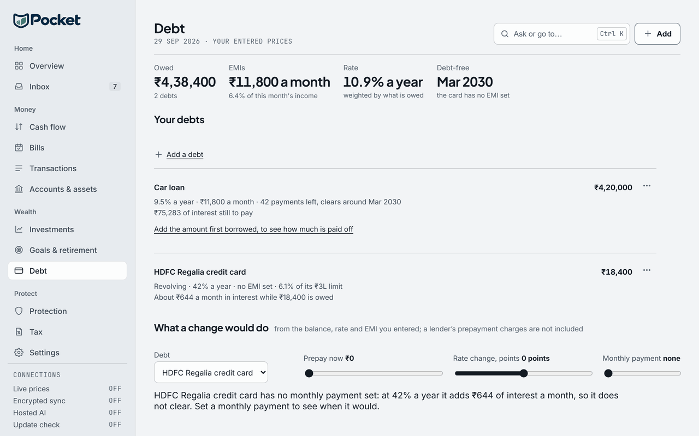

Paying off loans: snowball and avalanche, worked through
- Category
- Planning
- By
- Reviewed
- Read
- 4 min
The debts
Three debts, each with the payment it has now.
A debt's interest each month is its balance × its rate ÷ 12, as the Debt page works it. So month 1 of the Credit card is ₹1,20,000 × 36% ÷ 12 = ₹3,600.
| Debt | Owed | Rate a year | Payment a month | Clears in | Interest in all |
|---|---|---|---|---|---|
| Credit card | ₹1,20,000 | 36% | ₹5,000 | 44 months | ₹95,328 |
| Personal loan | ₹3,00,000 | 16% | ₹9,000 | 45 months | ₹99,395 |
| Two-wheeler loan | ₹40,000 | 11% | ₹3,000 | 15 months | ₹2,859 |
The three payments come to ₹17,000, and with ₹5,000 more, the budget is ₹22,000 a month, held every month.
Two orders
- Snowball: Two-wheeler loan, then Credit card, then Personal loan.
- Avalanche: Credit card, then Personal loan, then Two-wheeler loan.
Both pay every debt its payment first. What is left of the budget, the extra plus the payment of any debt already cleared, goes to the first debt in the order that is still owed.
What each takes
| Plan | Debt-free in | Interest in all |
|---|---|---|
| Each debt on its own payment | 45 months | ₹1,97,582 |
| Payments rolled on as debts clear, no extra (avalanche order) | 37 months | ₹1,67,256 |
| Snowball: smallest balance first | 26 months | ₹1,09,301 |
| Avalanche: highest rate first | 26 months | ₹1,03,554 |
Both are debt-free in 26 months; the avalanche pays ₹5,747 less in interest. Its order puts the extra on the credit card, whose rate of 36% is the highest. The snowball puts it on the two-wheeler loan, whose balance of ₹40,000 is the smallest, which it clears in month 6.
When each debt is cleared
| Debt | Snowball | Avalanche |
|---|---|---|
| Credit card | month 16 | month 15 |
| Personal loan | month 26 | month 26 |
| Two-wheeler loan | month 6 | month 15 |
What the figures assume
- The rates and payments stay as entered. A card's rate or a floating loan's moves with the lender.
- The budget does not change. ₹22,000 a month from the first month to the last, with a cleared debt's payment staying in it.
- No fees. A prepayment or foreclosure charge, where a lender has one, is not included.
- Interest added monthly, at the annual rate ÷ 12, before each month's payments.
How Pocket works it out
The two orders are Pocket's own, from its liabilities engine's payoff order.
Each debt's months and interest on its own payment are the Debt page's (the months to clear, and the interest as payments less the balance). The Debt page's what-if takes one debt at a time: a prepayment, a rate change or a different EMI. The month-by-month plan across several debts, with a cleared debt's payment rolled on, is worked on this page from the same monthly interest.

- What is owed, the EMIs, the rate weighted by what is owed, and the month debt is gone.
- What a change would do: a prepayment, a rate change or a payment, on the figures entered.
Questions
What is the difference between snowball and avalanche?
Both pay every debt's minimum and put the rest of the month's budget on one debt at a time, rolling a cleared debt's payment on to the next. The snowball takes the smallest balance first; the avalanche takes the highest rate first. Pocket's order for each is liabilities.payoff_order.
Which costs less?
On these debts the avalanche pays ₹1,03,554 in interest and the snowball ₹1,09,301: ₹5,747 less. Both are debt-free in 26 months. The snowball clears its first debt in month 6 and the avalanche in month 15. The gap depends on how far the rates and the balances differ.
Does a prepayment charge change this?
Yes. Some lenders charge a fee to part-pay or close a loan; none is included here, as the Debt page's what-if says too.
Sources
- Pocket's liabilities engine: payoff_order (avalanche, highest rate first; snowball, smallest balance first) and amortization_months, the Debt page's months to clear
Previous guide: An emergency fund in months, worked through
Pocket is free on Windows, macOS, Linux and Android, and keeps everything on your own device: download Pocket.